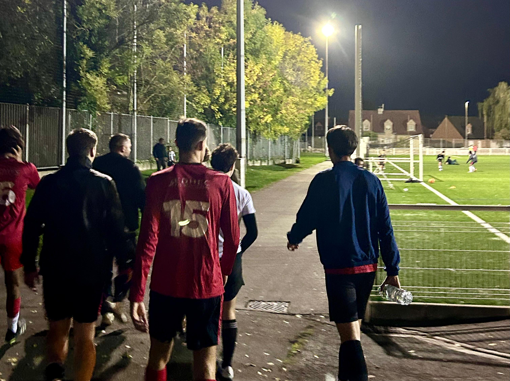

Le sport tient une place centrale dans mon parcours, non seulement comme activité physique, mais surtout comme école de méthode, de discipline et de stratégie.
Je pratique le football à 11 au sein de l’EDHEC FC, et ai eu la chance d’être détecté et sélectionné pour représenter l’école lors des compétitions universitaires nationales et inter-écoles. Cette année, notre équipe participera au Championnat Universitaire, à la Coupe de France ainsi qu’au Tournoi Saint-Gobain, l’un des événements étudiants les plus prestigieux d’Europe.
Ces tournois rassemblent chaque année des étudiants issus des meilleures écoles françaises et européennes, autour d’un esprit de compétition soutenu par les grandes institutions de la finance, du conseil et de l’industrie : Paribas, Société Générale, J.P. Morgan, Crédit Agricole CIB, Rothschild & Co, EY, Deutsche Bank, Mazars, ou encore Saint-Gobain. Leur présence illustre la proximité entre les valeurs sportives — performance, constance, intelligence collective — et celles du monde professionnel.
Évoluer dans cet environnement me permet de mesurer chaque jour l’importance de la coordination, de la lecture du jeu et de la gestion du rythme — autant d’aptitudes qui se transposent naturellement à la réflexion stratégique et à la prise de décision dans des contextes complexes.
Parallèlement, ma pratique du golf nourrit un rapport plus introspectif à la performance. C’est un sport d’analyse et de précision, où chaque geste requiert une anticipation fine, une évaluation du risque et un contrôle du tempo. J’y retrouve les mêmes principes qui structurent ma manière d’aborder les problèmes théoriques : observer, ajuster, et exécuter avec rigueur.
À travers le football comme le golf, je cultive la lucidité dans l’action, la résilience dans l’effort et la maîtrise sous pression — trois dimensions que je considère comme fondamentales, tant sur le terrain que dans toute démarche analytique et quantitative.
